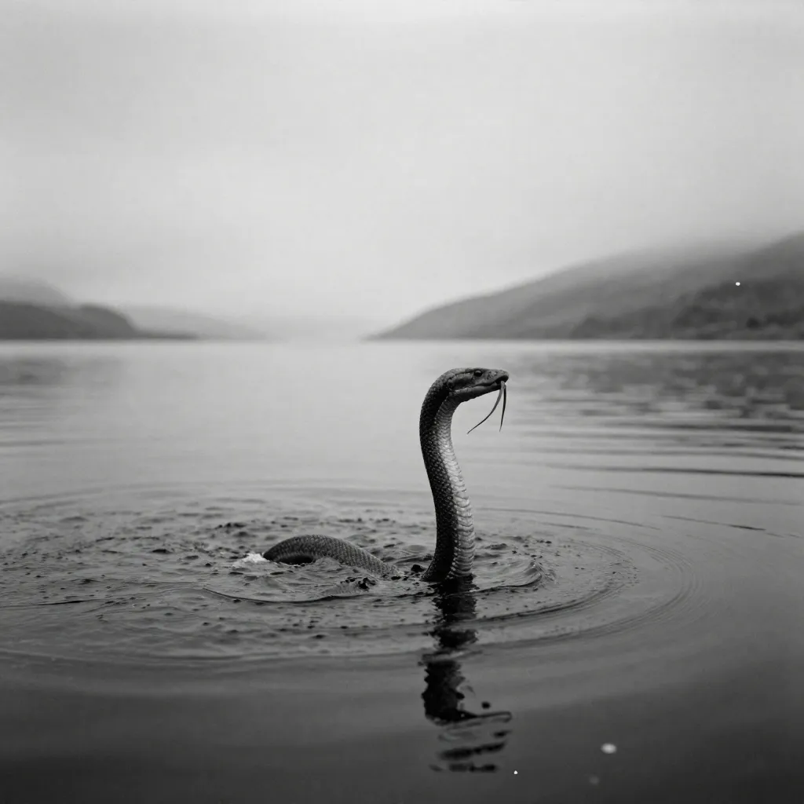
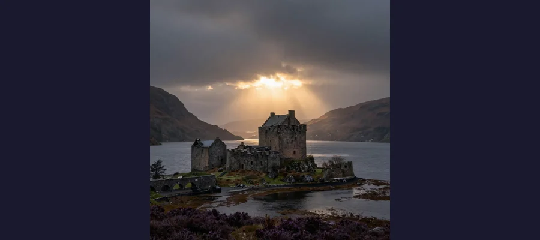

Loch Ness Monster: 1,500 Years of Sightings, Sonar Contacts, and the Photograph That Fooled the World

A mysterious shape in the dark, peat-stained waters of Loch Ness, the Scottish Highlands lake that has spawned over 1,100 reported sightings of an unidentified creature since the 6th century.
In 565 AD, an Irish monk named Saint Columba was traveling through the Scottish Highlands when he encountered a group of men burying a companion beside the River Ness. The dead man, they explained, had been attacked and killed by a water beast that had dragged him underwater while he was swimming. Columba immediately sent one of his own followers into the river to test the creature. The beast surfaced, roaring, jaws gaping. Columba raised his hand, made the sign of the cross, and commanded the monster to depart. It fled. The story was recorded a century later by the abbot Adomnan of Iona in his Life of Columba, and it became the earliest known account of a creature in Loch Ness — a legend that would endure for nearly fifteen hundred years.
Loch Ness is the largest body of freshwater in Britain by volume, containing more water than all the lakes in England and Wales combined. It is 23 miles long, up to 754 feet deep, and so dark with peat that visibility below a few feet is virtually zero. It was carved by glaciers during the last Ice Age, and its depths remain largely unexplored. For centuries, the people of the Scottish Highlands whispered about something ancient in the loch. Then, in the 1930s, the whispers became a roar. A new road was built along the loch's western shore, opening the area to tourism. Sightings multiplied. Photographs appeared. And Nessie — the Loch Ness Monster — became the most famous cryptid in the world, an icon of mystery that has generated thousands of sightings, dozens of scientific expeditions, and an estimated 25 to 41 million pounds in annual tourism revenue for the Scottish Highlands. The question is not whether people have seen something in Loch Ness. They have, hundreds of times. The question is what they saw — and whether the truth can ever emerge from waters so dark and so deep.
The Summer That Started It All: 1933 and the Birth of the Modern Monster
The modern era of the Loch Ness Monster began in 1933, when a new road was constructed along the western shore of the loch, clearing trees and opening previously hidden views of the water. In April of that year, Aldie Mackay, the manageress of the Drumnadrochit Hotel, reported seeing a whale-like creature in the loch — an account that was picked up by the Inverness Courier and reported across Britain. In July, a couple named George Spicer and his wife were driving along the new road when they saw a large, long-necked creature cross the road in front of their car and plunge into the water. Spicer described it as "the nearest approach to a dragon or prehistoric animal I ever saw in my life." The sighting was sensational, and the national press descended on the loch.
On November 12, 1933, Hugh Gray captured what is considered the first known photograph of the monster — a blurry image showing a dark, elongated shape on the surface of the water. Skeptics argued it showed a dog carrying a stick, an otter, or a swimming deer. Believers saw a creature. The photograph set a pattern that would repeat for ninety years: ambiguous images that convinced the convinced and convinced no one else.
Then came the photograph that changed everything. On April 19, 1934, a London physician named Robert Kenneth Wilson submitted a photograph to the Daily Mail showing a long, slender neck rising from the surface of Loch Ness. The image, which appeared to show a plesiosaur-like creature, was dubbed "the Surgeon's Photograph" and became the single most iconic image of the Loch Ness Monster — reproduced on postcards, book covers, and magazine front pages around the world. It was also, as would be revealed sixty years later, a complete hoax.
- 565 AD — Saint Columba encounters a water beast in the River Ness; earliest recorded account
- April 1933 — Aldie Mackay reports seeing a whale-like creature; Inverness Courier breaks the story
- July 1933 — George and Mrs. Spicer see a long-necked creature cross the road and enter the loch
- November 1933 — Hugh Gray takes the first known photograph of the monster
- April 1934 — The Surgeon's Photograph published in the Daily Mail; revealed as hoax in 1994
- 1960 — Tim Dinsdale films a hump moving across the loch; gives up engineering career to hunt Nessie
- 1987 — Operation Deepscan: 20 sonar boats scan the loch; three unexplained contacts detected
- 2011 — Marcus Atkinson captures sonar image of 5-foot object at 75 feet depth
- 2014 — Apple Maps satellite image shows a large shape in the loch; widely circulated
- 2019 — Neil Gemmell's eDNA study finds no reptile DNA but abundant eel DNA; proposes giant eel hypothesis
📸 The Photograph That Fooled the World
The Surgeon's Photograph of 1934 was not just a hoax — it was one of the most successful practical jokes in history. In 1994, researchers investigating the image traced it to Marmaduke Wetherell, a big-game hunter who had been hired by the Daily Mail to find the monster. After being humiliated by a fake monster trail, Wetherell enlisted his son Ian and a sculptor named Christian Spurling to build a toy submarine fitted with a carved neck and head, about twelve inches long. Robert Wilson, a respected surgeon, agreed to lend his name to the photograph to give it credibility. The image was taken at a distance that made the tiny model appear much larger than it was. The confession came from Spurling himself, on his deathbed, in a 1993 interview with researchers David Martin and Alastair Boyd. For sixty years, the photograph had been the single most compelling piece of visual evidence for the existence of the Loch Ness Monster — and it was a twelve-inch toy.

The famous Surgeon’s Photograph of 1934 — for decades the most compelling evidence for Nessie’s existence, until Christian Spurling confessed on his deathbed that it was a toy submarine fitted with a carved neck.
Sonar, Science, and the Search Beneath the Surface
If the photographs were inconclusive, the sonar evidence was more interesting — but no more definitive. Beginning in the 1960s, a series of scientific expeditions used sonar technology to scan the depths of Loch Ness, and several of them detected large, moving underwater objects that could not be immediately identified.
In 1960, Tim Dinsdale, an aeronautical engineer, filmed a hump-shaped object moving across the loch surface. The film was analyzed by the Joint Air Reconnaissance Intelligence Centre, which concluded that the object was "probably animate" and moving at approximately 6-7 knots. Dinsdale was so convinced that he abandoned his engineering career and devoted the rest of his life to hunting the monster, producing several more films and photographs over the following decades.
The most ambitious sonar survey was Operation Deepscan in 1987, which deployed twenty sonar-equipped boats in a line across the loch. The operation detected three large underwater contacts that could not be explained by known fish species. One contact, described as larger than a shark but smaller than a whale, was detected at a depth of about 600 feet. The results were tantalizing but inconclusive — the contacts could have been schools of fish, seals, or other known animals. A 2003 BBC expedition using 600 separate sonar beams found no evidence of any large animal in the loch.
The 2019 eDNA Study: The Most Comprehensive Scientific Investigation
In 2019, Professor Neil Gemmell, a geneticist at the University of Otago in New Zealand, led the most comprehensive scientific investigation of Loch Ness to date. His team collected water samples from multiple locations around the loch and extracted environmental DNA (eDNA) — the genetic material shed by all living organisms into their environment. The results were published after thorough analysis and delivered a clear verdict on the most popular theories.
The study found no reptile DNA whatsoever — effectively ruling out the plesiosaur theory, which had been the most popular explanation since the 1930s. No sturgeon DNA was found. No catfish DNA. No shark DNA. What the study did find was an abundance of eel DNA — European eels, which migrate to Loch Ness from the Sargasso Sea, a journey of over 3,100 miles. Gemmell noted that while the eel DNA did not prove the existence of giant eels, the data was "consistent with the idea" that large eels could be responsible for some sightings. European eels can reach lengths of about five feet, but Gemmell suggested that specimens significantly larger than average could produce the hump-like shapes witnesses have described. The study was not designed to disprove the monster — it was designed to catalogue all life in the loch — but its findings were the most significant scientific contribution to the Loch Ness debate in decades.
🌊 A Lake Built for Mysteries
Loch Ness is geologically unusual. It sits along the Great Glen Fault, a geological fracture that bisects Scotland from coast to coast. The loch is extraordinarily deep — up to 754 feet (230 meters) — and contains approximately 7.4 billion cubic meters of water, more than all the lakes in England and Wales combined. The water is nearly opaque due to high peat content, with visibility of only a few feet below the surface. The loch's temperature remains remarkably stable year-round at around 5 degrees Celsius (41 degrees Fahrenheit). These conditions — vast depth, zero visibility, and cold, stable temperatures — make thorough exploration practically impossible and create an environment where the imagination can fill in whatever the eyes cannot see. The loch is also subject to seiches — standing waves that can cause the water level to oscillate by several inches — and unusual temperature layers that can create mirage-like optical effects on the surface, potentially explaining some sightings.

Urquhart Castle, the medieval fortress overlooking Loch Ness, has been the backdrop for countless Nessie sightings and photographs. Its ruins perch on a rocky promontory where the loch is deepest.
The Monster Economy: Why Nessie Will Never Die
The Loch Ness Monster is no longer a mystery. It is an industry. The Scottish Highlands receive an estimated 25 to 41 million pounds annually from Nessie-related tourism, and the loch draws over 500,000 visitors per year to a region that would otherwise struggle to attract a fraction of that number. The village of Drumnadrochit, population roughly 1,100, is home to the Loch Ness Centre and Exhibition and the Loch Ness Monster Exhibition Centre, two competing museums that tell the story of the monster from different perspectives. Boat tours ply the loch daily. Hotels, restaurants, gift shops, and petrol stations all trade on the Nessie brand. The creature appears on everything from whisky bottles to shortbread tins.
The economic reality of Nessie creates a strange paradox: the monster is too valuable to be proven real (which would end the mystery) and too valuable to be conclusively debunked (which would kill the tourism). Every scientific study that fails to find evidence is reported as "Nessie still not found" rather than "Nessie does not exist". Every ambiguous sonar contact or blurry photograph is presented as "new evidence" rather than "inconclusive data." The local economy has a vested interest in keeping the question open, and the media has a vested interest in periodically reigniting the story. The result is a self-sustaining cycle of speculation that has survived every scientific investigation, every skeptical analysis, and every exposed hoax.
- Plesiosaur — The most popular theory since the 1930s; a surviving prehistoric marine reptile. Ruled out by the 2019 eDNA study, which found no reptile DNA.
- Giant eel — Proposed by Neil Gemmell's 2019 eDNA study; European eels are abundant in the loch and could grow larger than average specimens.
- Sturgeon — Large fish that can reach 12+ feet; consistent with some descriptions of humps. No sturgeon DNA found in the 2019 study.
- Swimming deer or elk — When swimming, a deer's head and neck above water could resemble a long-necked creature.
- Optical illusions — Loch Ness's unique thermal layers and seiches can create mirage effects, wave patterns, and surface distortions.
- Seismic gas emissions — The Great Glen Fault may release gas bubbles that create surface disturbances resembling a large animal.
- Elephants — A fringe theory suggesting circus elephants swimming in the loch (Bertie the elephant was photographed swimming in Loch Ness in the 1930s) could explain some sightings.
🏆 Nessie in Pop Culture
The Loch Ness Monster has appeared in virtually every medium of popular culture. The creature featured in episodes of Doctor Who ("Terror of the Zygons," 1975), Scooby-Doo, The Simpsons, and South Park. The 1996 film Loch Ness starring Ted Danson presented a thoughtful take on the legend. The animated film The Water Horse (2007) offered a family-friendly version of the story. Nessie has appeared in countless books, video games, comic strips, and advertisements. The monster even has an official Scientific Register — sightings are formally logged by the Official Loch Ness Monster Sightings Register, maintained by Gary Campbell, a chartered accountant who has recorded over 1,100 sightings since 1996. The creature's cultural pervasiveness is such that "Loch Ness Monster" has become a universal shorthand for any large, elusive, and possibly imaginary entity — a metaphor for things we believe in despite insufficient evidence.
🐦 The Monster We Need
The Loch Ness Monster is not a scientific question. It is a cultural phenomenon. The 2019 eDNA study came as close to a definitive answer as science is likely to provide: there is no plesiosaur in Loch Ness, no sturgeon, no unknown marine reptile. There are eels — lots of eels — and there are the physical properties of a vast, dark, thermally unstable lake that can produce extraordinary optical effects. And there are people, hundreds of them, who have genuinely seen something they could not explain in the waters of Loch Ness. Were they all mistaken? Almost certainly. The human brain is a pattern-matching machine that sees faces in clouds and animals in waves, especially when it has been primed to expect them. But the power of the Loch Ness legend does not depend on the existence of a monster. It depends on the possibility of one — the idea that in a world mapped, measured, and digitized down to the last square meter, there could still be something in the deep that we have not found. Like the enduring questions around the Roswell UFO incident, the witness accounts of the Mothman of Point Pleasant, or the forensic debates surrounding the Shroud of Turin, the Loch Ness Monster persists because it occupies the narrow space between what we know and what we want to believe. The Zodiac Killer was real — a flesh-and-blood murderer whose identity remains hidden. The Anastasia Romanov story was real — a princess who truly did vanish, even if she was found. Nessie may never have been real at all. But the human need for mystery — for something out there in the dark, just beyond the reach of our understanding — is as real and as deep as Loch Ness itself.
Frequently Asked Questions
Has anyone ever proven the Loch Ness Monster exists?
No. Despite over ninety years of dedicated searching, thousands of reported sightings, dozens of photographs and films, and multiple scientific expeditions using sonar and environmental DNA analysis, no conclusive evidence of a large unknown animal in Loch Ness has ever been produced. The 2019 eDNA study by Professor Neil Gemmell at the University of Otago found no reptile, sturgeon, or catfish DNA in the loch, effectively ruling out the most popular candidate species. The most famous piece of visual evidence — the 1934 Surgeon's Photograph — was confirmed as a hoax in 1994.
What did the 2019 eDNA study actually find?
The study found DNA from a wide range of known species in Loch Ness, including fish, amphibians, birds, and mammals. The most significant finding was the abundance of European eel DNA. The study found no reptile DNA (ruling out plesiosaurs), no sturgeon DNA, and no catfish DNA. Professor Gemmell noted that while the data did not prove the existence of giant eels, it was consistent with the hypothesis that unusually large eels could account for some sightings. The study catalogued over 3,000 species from the loch's waters.
How deep is Loch Ness?
Loch Ness reaches a maximum depth of approximately 754 feet (230 meters) and has an average depth of about 433 feet (132 meters). It is 23 miles (37 kilometers) long and contains roughly 7.4 billion cubic meters of water — more than all the lakes in England and Wales combined. The water is extremely dark due to high peat content, with visibility typically limited to a few feet below the surface.
Why do people still believe in the Loch Ness Monster?
People continue to believe in the Loch Ness Monster for several reasons: the genuine difficulty of searching a lake that is 23 miles long and 754 feet deep with near-zero visibility; the large number of otherwise credible witnesses who have reported sightings; the historical depth of the legend (dating back to Saint Columba in 565 AD); the economic incentive of the local tourism industry to maintain interest; and the fundamental human desire to believe that mysteries remain in an age of satellites and sonar. The legend has become self-sustaining — each new sighting or piece of ambiguous evidence reinforces the story, regardless of what science says.
📖 Recommended Reading
Want to learn more? Check out What Do We Know About the Loch Ness Monster?: Korté, Steve, Who HQ, Thomson, Andrew: 9780593519202 on Amazon for a deeper dive into this fascinating topic. (As an Amazon Associate, we earn from qualifying purchases.)
References & Further Reading
- Wikipedia: Loch Ness Monster — Comprehensive history of sightings, scientific investigations, and cultural impact
- Britannica: Loch Ness Monster — Overview of the legend, evidence, and scientific explanations
- BBC News: Loch Ness Monster May Be a Giant Eel — Coverage of the 2019 Neil Gemmell eDNA study results
- PBS NOVA: Birth of a Legend — History of organized monster hunting and scientific expeditions at Loch Ness
- Wikipedia: Robert Kenneth Wilson — The surgeon behind the famous 1934 hoax photograph
- Scientific American: Photos of the Loch Ness Monster Revisited — Scientific analysis of Nessie photographs and evidence
- Discovery UK: Is the Loch Ness Monster Real? — History, sightings, and investigation of the legend
Editorial note: reconstructions are continuously revised as imaging and inscription studies improve. See our Editorial Policy.